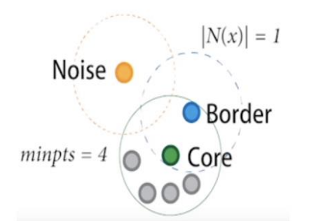
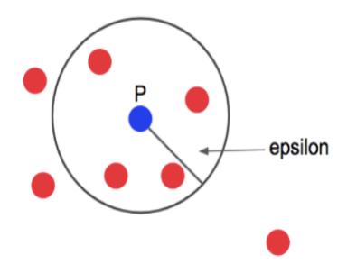
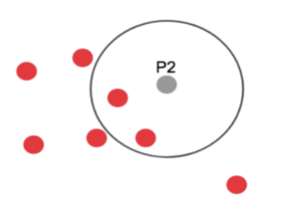
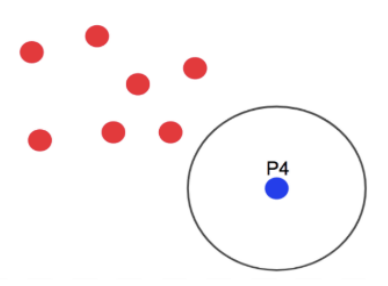
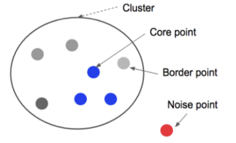

군집
1. K-mean
- 군집분석은 데이터셋의 관측값이 가지고 있는 여러 속성을 분석하여 서로 비슷한 특징을 갖는 관측값끼리 같은 클러스터(집단)으로 묶는 알고리즘이다.
- 다른 클러스터 간에는 서로 완전하게 구분되는 특징을 갖기 때문에 어느 클러스터에도 속하지 못하는 관측값이 존재할 수 있다.
이런 특성을 이용하여 특이 데이터(이상값, 중복값 등)를 찾는데 활용할 수 있다.
한편 군집분석은 비지도학습 유형이다.
- 관측값을 몇 개의 집단으로 나눈다는 점에서 분류 알고리즘과 비슷하지만, 군집분석은 정답이 없는 상태에서 데이터 자체의 유사성만을 기준으로 판단하는 점에서 정답을 알고 있는 상태에서 학습 과정을 거치는 분류 알고리즘과 차이가 있다.
- 군집 알고리즘은 신용카드 부정 사용 탐지, 구매 패턴 분석 등 소비자 행동특성을 그룹화 하는데 사용된다. 어떤 소비자와 유사한 특성을 갖는 집단을 구분하게 되면, 같은 집단내의 다른 소비자를 통해 새로운 소비자의 구매 패턴이나 행동 등을 예측하는데 활용할 수 있다.
군집에는 여러 가지 알고리즘이 있지만, 여기서는 k-means알고리즘과 DBSCAN 알고리즘에 대해서 알아보자.
피셔의 붓꽃
- iris 데이터셋은 이 데이터셋 값을 공개해 통계학적 분석을 실시한 로널드 피셔(Ronald Fisher, 1890 ~ 1962) 이름에서 따온 것이다.
- 이것은 영국 식물학자 에드가 앤더슨(Edgar Anderson, 1897 ~ 1969)이 세 종류의 붓꽃의 유전적 분화를 밝힐 목적으로 여러 개체의 크기를 측정한 것을 정비한 데이터 셋이다.
iris 데이터셋이란 ?
- iris 는 붓꽃 관련 데이터셋으로 피셔의 붓꽃 이라고도 한다.
- 데이터 내용
- 붓꽃 3종류에서 각각 50개씩의 측정 데이터
- 측정 데이터 내역
- 꽃받침의 길이, 꽃받침의 폭, 꽃잎의 길이, 꽃잎의 폭
1) scikit-learn의 iris DataSet
- scikit-learn 에는 iris 데이터셋이 내장되어 있으며, iris 데이터를 읽을 수 있도록 API로 sklearn.datasets.load_iris() 를 준비해 두었다.
from sklearn import datasets
iris = datasets.load_iris()
- target_names : 붓꽃의 품종이 등록되어 있음
print( iris[‘target_names’] )
# ['setosa' 'versicolor' 'virginica']
- feature_names : 데이터 속성의 이름이 등록되어 있음
print( iris['feature_names'] )
# ['sepal length (cm)', 'sepal width (cm)', 'petal length (cm)', 'petal width (cm)']
# [ '꽃받침의 길이', '꽃받침의 폭', '꽃잎의 길이', '꽃잎의 폭' ]
2) K-Means Clustring
- K-Means 알고리즘은 데이터 간의 유사성을 측정하는 기준으로 각 클러스터의 중심까지의 거리를 이용한다. 벡터 공간에 위치한 어떤 데이터에 대하여 k개의 클러스터가 주어졌을 때 클러스터의 중심까지 거리가 가장 가까운 클러스터로 해당 데이터를 할당한다. 다른 클러스터 간에는 서로 완전하게 구분하기 위하여 일정한 거리 이상 떨어져야 핚다.
- 한편 몇 개의 클러스터로 데이터를 구분할 것인지를 결정하는 k값에 따라 모델의 성능이 달라진다. 일반적으로 k값이 클수록 모델의 정확도는 개선 되지만, k값이 너무 커지면 선택지가 너무 많아지므로 분석의 효과가 사라진다
- K-Means Clustring는 1950년에 한 논문에서 처음 발표한 방법이다.
오래된 방법이지만, 계산이 간단하고 직관적으로 알기 쉽기 때문에 지금도 많이 사용하는 알고리즘이다.
K-Means Clustring의 장점
- 일반적인 군집화에서 가장 많이 활용하는 알고리즘이다.
- 알고리즘이 쉽고 간결하다.
K-Means Clustring의 단점
- 거리 기반 알고리즘으로 속성의 개수가 매우 많을 경우 굮집화 정확도가 떨어진다.
- 반복을 수행하는데 , 반복 횟수가 많을 경우 수행 시간이 매우 느려진다.
- 몇 개의 군집(cluster)을 선택해야 할 지 가이드 하기가 어렵다.
3) K-Means Clustring 절차
- K-Means는 군집화(Clustring)에서 가장 일반적으로 사용되는 알고리즘이다. K-Means는 군집 중심점(centroid)이라는 특정한 임의의 지점을 선택해 해당 중심에 가장 가까운 포인트들을 선택하는 군집화 기법이다.
- 군집 중심점은 선택된 포인트의 평균 지점으로 이동하고 이동된 중심점에서 다시 가까운 포인트를 선택, 다시 중심점을 평균 지점으로 이동하는 프로세스를 반복적으로 수행한다.
- 모든 데이터 포인트에서 더 이상 중심점의 이동이 없을 경우에 반복을 멈추고 해당 중심점에 속하는 데이터 포인트들을 군집화하는 기법이다.
먼저 군집화의 기준이 되는 중심을 구성하려는 군집화 개수만큼 임의의 위치에 가져다 놓는다. 전체 데이터를 3개로 군집화하려면 3개의 중심을 임의의 위치에 가져다 놓는다.
각 데이터는 가장 가까운 곳에 위치한 중심점에 소속된다.
이렇게 소속이 결정되면 군집 중심점을 소속된 데이터의 평균 중심으로 이동한다.
중심점이 이동했기 때문에 각 데이터는 기존에 속한 중심점보다 더 가까운 중심점이 있다면 해당 중심점으로 다시 소속을 변경한다.
다시 중심을 소속된 데이터의 평균 중심으로 이동한다.
중심점을 이동했는데 데이터의 중심점 소속 변경이 없으면 군집화를 종료 한다. 그렇지 않으면 다시 4번 과정을 거쳐서 소속을 변경하고 이 과정을 반복한다
4) 실습 - iris
5) 실습 - UCI - 도매업 고객 데이터셋
2. DBSCAN Clustring (밀도 기반 클러스터링) 알고리즘
- DBSCAN(Density-Based Spatial Clustering of Applications with Noise)은 데이터가 위치하고 있는 공간 밀집도를 기준으로 클러스터를 구분한다.
- 자기를 중심으로 반지름 R(epsilon)의 공갂에 최소 M개의 포인트가 존재하는 점을 코어 포인트(core point)라고 부른다.
- 코어 포인트는 아니지만 반지름 R안에 다른 코어 포인트가 있을 경우에 경계 포인트(border point)라고 부른다.
- 코어 포인트도 아니고 경계 포인트에도 속하지 않는 점을 noise(또는 outlier)라고 부른다.
- 하나의 클러스터는 반지름이 R안에 서로 위치하는 모든 코어 포인트를 포함하는 방식으로 구성된다. 당연히 각 코어 포인트 주위에 있는 경계 포인트를 포함한다. 서로 밀접한 데이터끼리 하나의 클러스터를 구성하게 되고 어느 클러스터에도 속하지 않는 점들은 noise로 남게 된다.
DBSCAN 알고리즘은 밀도가 높은 부분으로 클러스터링 하는 방식이다.
반경과 점의 수로 군집을 만든다.
반경 epsilon과 최소 점의 수인 minpts(4) 를 정한다

하나의 점에서 반경 epsilon안에 존재하는 점의 수를 센다.
이때 반경 안에 속한 점이 minpts로 정한 수(minpts=4) 이상이면 해당 점은 core point 라고 부른다.
현재 점 p에서 4개 이상의 점이 반경 안에 있기 때문에 p는 core point 가 된다.

Core point에 속한 점들이 4개 미만의 점이 속하게 되면, 해당 점은 border point라고 부른다.
P2는 반경 epsilon 안에 3개의 점만 존재하므로 minpts=4 미만이기 때문에 border point 가 된다.

하나의 점에서 반경 epsilon을 확인 했을때 어느 군집에도 속하지 않는 점들을 outlier라 하고, 각 점들을 noise point 라고 한다.
P4는 반경 안에 속하는 점이 아무것도 없으므로 noise point 가 된다.
DBSCAN 알고리즘은 이와 같이 군집에 포함되지 않는 outlier 검출에 효율적이다

초반에 지정한 epsilon 반경 앆에 minpts 이상의 점으로 구성된다면, 해당 점을 중심으로 군집이 형성되고, core point로 지정한다.
core point가 서로 다른 core point군집의 일부가 되면 서로 연결되어 하나의 군집이 형성된다.
이때 군집에는 속해 있지만 core point가 아닌 점들을 border point라고 하며, 아무곳에도 속하지 않는 점은 noise point가 된다.

DBSCAN 알고리즘의 장점
- 클러스터의 수를 미리 정하지 않아도 된다.
- 다양한 모양의 크기의 클러스터를 얻는 것이 가능하다.
- 모양이 기하학적인 분포라도, 밀도 여부에 따라 군집도를 찾을 수 있다.
- Outlier 검출을 통해 필요하지 않는 noise 데이터를 검출하는 것이 가능하다.
DBSCAN 알고리즘의 단점
- 반경(epsilon)으로 설정한 값에 민감하게 작용한다.
- DBSCAN 알고리즘을 사용하려면 적절한 epsilon 값을 설정하는 것이 중요하다.
실습)
학교알리미 공개용 데이터 중에서 서울시 중학교 졸업생의 진로현황 데이터셋을 사용하여 고등학교 진학률이 비슷한 중학교끼리 군집(cluster)을 만들어 보자
# To add a new cell, type '# %%'
# To add a new markdown cell, type '# %% [markdown]'
# %%
# 학교알리미 공개용 데이터 중에서 서울시 중학교 졸업생의 진로현황 데이터셋을 사용하여
# 고등학교 진학률이 비슷한 중학교끼리 군집(cluster)을 만들어 보자
import pandas as pd
import folium
# 학교알리미 공개용 데이터 중에서 서울시 중학교 졸업생의 진로현황 데이터셋
df = pd.read_excel('../data/2016_middle_shcool_graduates_report.xlsx', header=0)
# %%
# IPython console 디스플레이 옵션 설정하기
pd.set_option('display.width', None) # 출력화면의 너비
pd.set_option('display.max_rows', 100) # 출력할 행의 개수 한도
pd.set_option('display.max_columns', 30) # 출력할 열의 개수 한도
pd.set_option('display.max_colwidth', 20) # 출력할 열의 너비
pd.set_option('display.unicode.east_asian_width', True) # 유니코드 사용 너비 조정
# 데이터프레임의 열 이름 출력
print(df.columns.values)
# %%
# 자료형 확인
print(df.info())
# %%
# nan 데이터 포함 유무 확인
print(df.isnull().sum(axis=0))
# %%
# 통계 요약정보 확인
print(df.describe())
# %%
# 1. 지도에 위치 표시
mschool_map = folium.Map(location=[37.55, 126.98], tiles='Stamen Terrain', zoom_start=12)
# 중학교 위치정보를 CirclMarker로 표시
for name, lat, lng in zip(df.학교명, df.위도, df.경도):
folium.CircleMarker([lat, lng],
radius=5, # 원의 반지름
color='brown', # 원의 둘레 색상
fill=True,
fill_color='coral', # 원을 채우는 색
fill_opacity=0.7, # 투명도
popup=name # 팝업기능(원형마커를 클릭하면 학교명이 팝업으로 출력)
).add_to(mschool_map)
mschool_map.save('seoul_mschool_location.html')
# %%
# 2. 데이터 전처리
from sklearn import preprocessing
label_encoder = preprocessing.LabelEncoder() # label encdoer생성
# 모델이 인식할 수 없는 문자형 데이터를 원핫인코딩으로 처리하여 더미 변수에 저장
onehot_location = label_encoder.fit_transform(df['지역']) # 지역구 이름
onehot_code = label_encoder.fit_transform(df['코드']) # 3, 5, 9
onehot_type = label_encoder.fit_transform(df['유형']) # 국립, 공립, 사립
onehot_day = label_encoder.fit_transform(df['주야']) # 주간, 야간
# 원핫 인코딩된 결과를 새로운 열(변수)에 할당
df['location'] = onehot_location
df['code'] = onehot_code
df['type'] = onehot_type
df['day'] = onehot_day
# %%
print(df.head())
# %%
# sklearn 라이브러리에서 cluster 군집 모델 가져오기
from sklearn import cluster
# 분석1. 과학고, 외고_국제고, 자사고 진학률로 군집
# 분석에 사용할 속성을 선택(과학고, 외고_국제고, 자사고 진학률)
print('분석1.과학고, 외고_국제고, 자사고 진학률로 군집')
columns_list = [10, 11, 14] # 각컬럼의 인덱스 번호(위치)
x = df.iloc[ : , columns_list] # 행전체, 10, 11, 14 위치의 컬럼(열)
print(x[ :10])
# %%
# 설명 변수 데이터를 정규화
x = preprocessing.StandardScaler().fit(x).transform(x)
# DBSCAN 모델 객체 생성
# 밀도 계산의 기준이 되는 반지름 R(eps=0.2)과 최소 포인트 개수 M(min_samples=5) 설정
# eps= 값에 따라 민감하게 반응.
# 각 조건 별로 진행을 해봐야됨.
dbm = cluster.DBSCAN(eps=0.2, min_samples=5)
# DBSCAN 모델학습
dbm.fit(x)
# 예측 (굮집) 결과를 출력한 열(속성)의 값 구하기
# 모델의 labels_ 속성으로 확인하면 5개의 클러스터 값 ( -1, 0, 1, 2, 3 ) 으로 나타남
cluster_label = dbm.labels_
print(cluster_label)
# -1, 0, 1, 2, 3 의 5가지의 클러스터
# %%
# 예측(군집) 결과를 저장할 열(Cluster)을 데이터프레임에 추가
df['Cluster'] = cluster_label # cluster 열이 추가됨
print(df.head())
# %%
# 클러스터 값으로 그룹화를 하고, 그룹별로 내용 출력
grouped_cols = [1, 2, 4] + columns_list # 인덱스(지역명, 학교명, 유형) + 기존 3개(10, 11, 14)
grouped = df.groupby('Cluster') # 클러스터값 기준으로 그룹화시킴
for key, group in grouped :
print('* key :', key) # 클러스터 값: -1, 0, 1, 2, 3
print('* number :', len(group)) # 각 클러스터 속한 학교수
print(group.iloc[ : , grouped_cols].head()) # 5개의 데이터 출력
print('\n')
# 클러스터 -1 : Outlier , 제외
# 클러스터 0 : 외고_국제고와 자사고 합격률은 높지만 과학고 합격자가 없다.
# 클러스터 1 : 자사고 합격자만 존재하는 그룹
# 클러스터 2 : 자사고 합격률이 매우 높으면서 과학고와 외고_국제고 합격자도 일부 존재한다.
# 클러스터 3 : 과학고 합격자 없이 외고_국제고와 자사고 합격자를 배출한 점은 클러스터 0과 비슷하지만, 외고_국제고 합격률이 클러스터 0에 비해 현저하게 낮다.
# %%
# 그래프로 표현 - 시각화 (클러스터별로)
colors = {-1:'gray', 0:'coral', 1:'blue', 2:'green', 3:'red', 4:'purple', 5:'orange', 6:'brown', 7:'brick', 8:'yellow', 9:'magenta', 10:'cyan'}
cluster_map = folium.Map(location=[37.55, 126.98], tiles='Stamen Terrain', zoom_start=12)
for name, lat, lng, clus in zip(df.학교명, df.위도, df.경도, df.Cluster):
folium.CircleMarker([lat, lng],
radius=5, # 원의 반지름
color=colors[clus], # 원의 둘레 색상
fill=True,
fill_color=colors[clus], # 원을 채우는 색
fill_opacity=0.7, # 투명도
popup=name
).add_to(cluster_map)
# 지도를 html 파일로 저장하기
cluster_map.save('seoul_mschool_cluster.html')
# %%
# 분석2. 과학고, 외고_국제고, 자사고 진학률, 유형(국립,공립,사립)으로 군집
# X2 데이터셋에 대하여 위의 과정을 반복(과학고, 외고_국제고, 자사고 진학률, 유형)
print('분석2. 과학고, 외고_국제고, 자사고 진학률, 유형(국립,공립,사립)으로 군집')
columns_list2 = [10, 11, 14, 23]
x2 = df.iloc[:, columns_list2]
print(x2[:5])
# %%
# 설명 변수 데이터를 정규화
x2 = preprocessing.StandardScaler().fit(x2).transform(x2)
# DBSCAN 모델 객체 생성
# 밀도 계산의 기준이 되는 반지름 R(eps=0.2)과 최소 포인트 개수 M(min_samples=5) 설정
dbm2 = cluster.DBSCAN(eps=0.2, min_samples=5)
# DBSCAN 모델 학습
dbm2.fit(x2)
# %%
# 예측(군집) 결과를 저장핛 열(Cluster2)을 데이터프레임에 추가
df['Cluster2'] = dbm2.labels_ # Cluster2 열 추가됨
# 클러스터 값으로 그룹화하고, 그룹별로 내용 출력 (첫 5행만 출력)
grouped2_cols = [1, 2, 4] + columns_list2 # 1:지역명, 2:학교명, 4:유형
grouped2 = df.groupby('Cluster2')
for key, group in grouped2:
print('* key :', key) # 클러스터 값: -1, 0 ~ 10
print('* number :', len(group)) # 각 클러스터 속한 학교수
print(group.iloc[:, grouped2_cols].head()) # 5개의 데이터 출력
print('\n')
# %%
cluster2_map = folium.Map(location=[37.55,126.98], tiles='Stamen Terrain', zoom_start=12)
for name, lat, lng, clus in zip(df.학교명, df.위도, df.경도, df.Cluster2):
folium.CircleMarker([lat, lng],
radius=5, # 원의 반지름
color=colors[clus], # 원의 둘레 색상
fill=True,
fill_color=colors[clus], # 원을 채우는 색
fill_opacity=0.7, # 투명도
popup=name
).add_to(cluster2_map)
# 지도를 html 파일로 저장하기
cluster2_map.save('seoul_mschool_cluster2.html')
# %%
# 분석3. 과학고, 외고_국제고 군집
# X3 데이터셋에 대하여 위의 과정을 반복(과학고, 외고_국제고)
print('분석3. 과학고, 외고_국제고 군집')
columns_list3 = [10, 11]
x3 = df.iloc[:, columns_list3]
print(x3[:5])
# %%
# 설명 변수 데이터를 정규화
x3 = preprocessing.StandardScaler().fit(x3).transform(x3)
# DBSCAN 모델 객체 생성
# 밀도 계산의 기준이 되는 반지름 R(eps=0.2)과 최소 포인트 개수 M(min_samples=5) 설정
dbm3 = cluster.DBSCAN(eps=0.2, min_samples=5)
# DBSCAN 모델 학습
dbm3.fit(x3)
# 예측(군집) 결과를 저장핛 열(Cluster3)을 데이터프레임에 추가
df['Cluster3'] = dbm3.labels_ # Cluster3 열 추가됨
# 클러스터 값으로 그룹화하고, 그룹별로 내용 출력 (첫 5행만 출력)
grouped3_cols = [1, 2, 4] + columns_list3 # 1:지역명, 2:학교명, 4:유형
grouped3 = df.groupby('Cluster3')
for key, group in grouped3:
print('* key :', key) # 클러스터 값: -1, 0 ~ 6
print('* number :', len(group)) # 각 클러스터 속핚 학교수
print(group.iloc[:, grouped3_cols].head()) # 5개의 데이터 출력
print('\n')
# %%
cluster3_map = folium.Map(location=[37.55,126.98], tiles='Stamen Terrain', zoom_start=12)
for name, lat, lng, clus in zip(df.학교명, df.위도, df.경도, df.Cluster3):
folium.CircleMarker([lat, lng],
radius=5, # 원의 반지름
color=colors[clus], # 원의 둘레 색상
fill=True,
fill_color=colors[clus], # 원을 채우는 색
fill_opacity=0.7, # 투명도
popup=name
).add_to(cluster3_map)
# 지도를 html 파일로 저장하기
cluster3_map.save('seoul_mschool_cluster3.html')